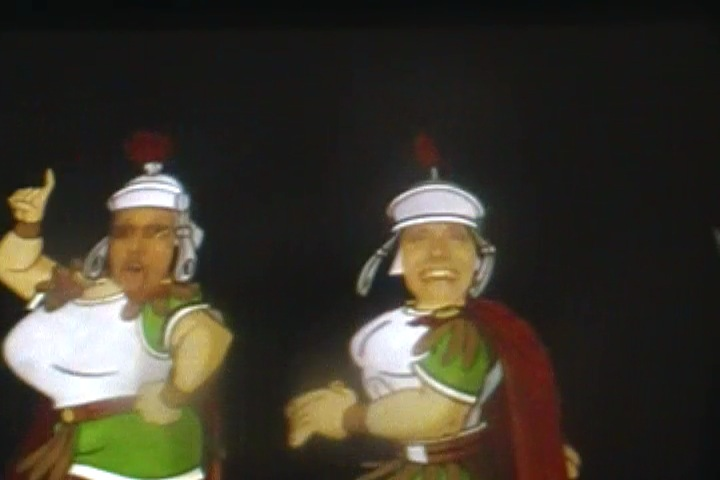

| |
Parc Asterix Review

Parc Asterix is a fun amusement park. Now the ratings for this park tend to be pretty mixed. I know a lot of enthusiasts really like this park and definetly rank it as one of the best theme parks in all of Europe. While on the other hand, I also know a lot of enthusiasts who really aren't fans of this park and rank it fairly low. As for me, I'm pretty neutral on the park. I had nothing against Parc Asterix. It didn't seem like a horrible park or anything. It had some good rides, and I did find that I really enjoyed my time there. With that said, this place is no Europa Park or Liseberg or Grona Lund. It definetly had some flaws in its operations, and the fact that it was CROWDED as hell also shaped my opinion of the park. I might be thinking more positively if it was less crowded. I'm just happy that I got those fast passes, which were a total saving grace. But hey, the theming at the park is pretty damn good, and while it's coaster collection isn't the best (in fact, they have the worst coaster we've ridden so far), they do have some really fun rides, ranging from a B&M Invert, to a fun custom CCI Wooden Coaster that used to be very highly rated. And on top of that, it has some really cool water rides, a really fun dark ride, and a bunch of other cool rides. All while themed to the French Asterix comics. I'm not familiar with the comics, but I did really enjoy all the theming throughout the park. So yeah. It's definetly a fun park and all, just be very careful with all of the crowds that this park can produce, and be on the lookout when it comes to the operations.
Rollercoasters
There is a link to a review of all the Rollercoasters at Parc Asterix.
Please keep in mind that there is no review of Pégase Express because it didn't exist when I last visited.
Top Coasters
OzIris Review

Tonnerre de Zeus Review

Fun Coasters
Trace Du Hourra Review

Family Coasters
Vol D'Icare Review

Sh*tty Coasters
Gouderix Review

Kiddy Coasters
SOS Numérobis Review

Past Coasters
Ronde des Rondins Review

Flat Rides
Here are the reviews of all the Flat Rides at Parc Asterix. Well first off, let's talk about what is without a doubt, the star flat ride of the park, and the only one I rode. The park's Mad House. Now in Europe, Mad Houses are pretty common and nothing to go crazy over (though they're pretty rare in America, so until you travel across Europe, they'll seem like a novelty). But what makes this one of the best Mad Houses out there is just the theme and story to this ride. Basically, they take your picture, put you in Caesar's army, and then you have to go out and fight the Romans and be a hero to save France. It's just a ton of fun, especially with a big group of friends as you all become the army. Yeah, this is the only army I'll ever be joining. As for the rest of the flat rides, they aren't that special. They have a magic carpet, a pirate ship, teacups, a troika, some chairswings, and a carousel where you can ride in the fat guy from the Asterix comics (Sorry, I don't know his name) ass. Yeah, none of those seem that interesting, but they all look like fun rides. Esepcially the carousel in the dude's ass.

Worst soldiers ever.
Dark Rides
All right. Parc Asterix doesn't exactly have a booming dark ride collection as it only has one dark ride. But...for some reason, people really seemed to think that this is a great ride. Uh...OK? That dark ride would be Transdemonium. Basically, the theme of Transdemonium would be that there are these skeletons and witches and evil puppets and...uh...I'm not exactly sure what was going on as I don't speak French. But I liked it. It was a fun dark ride and all. But it's not amazing. Trust me, you won't be seeing Transdemonium popping up on our Top 10 Dark Rides List. So yeah, I do find the ride to be overrated. Oh, and there are a couple of people who insist on counting Transdemonium as a credit. Uh...you clearly don't know what a credit is. But then again, there are also people who count Fire in the Hole as a credit too. They're also dead f*cking wrong. Just because it's like a ghost train does not mean that it's a credit. It may be fun, but NO!!! NOT A CREDIT!!!! Or the greatest dark ride ever. But hey. If Ghost Trains are your thing, go for it.
 If this is a credit, then you are sad and pathetic.
If this is a credit, then you are sad and pathetic.
Water Rides
Parc Asterix has an...all right water ride collection. The one water ride I managed to ride was their spinning raft ride. And while I've seen a lot of people claim that these rides spin like crazy, it sadly never did such for me. So that really dissapointed me. Now, I'm hoping that I just got unlucky. And I've only ridden two of these things, but unfortunetly, it was pretty lame at the other park I've been to. Still keeping my fingers crossed for the insanely fast spinning raft ride. They also have a log ride and a shoot the chutes ride here, neither of which I rode. Mainly because I went on a hot French summer day, and the water rides were PACKED!!! But even so, neither of those seem like overly impressive water rides. Yeah, they have some good theming, but as water rides themselves, they seemed dull and I'm not exactly screaming to get on them next time I go to Parc Asterix.
Dining
The dining at Parc Asterix is pretty good. Granted, it's nothing too crazy compared to the other European Parks, but European Parks in general tend to have better food than American Parks. So yeah. It's still really good food. We ate lunch at this resteraunt (not sure of the name) shaped like a fruit hat, and it was full blown full service resteraunt. I mean, they served us steak, fries, steamed vegtables, and we even managed to get dessert, which consisted of this sort of chocolate moose pudding with a French Maceroon (LOVE THOSE THINGS!!!) and a Raspberry Crumble. OK, this was definetly above average. Maybe not Top 10 worthy, but this was really freaking good. I'm not sure if Parc Asterix has better resteraunts, but this particular one was really good and I'd recommend it if you have the time for a full course meal.
 The carnivore inside of me is happy.
The carnivore inside of me is happy.
Theming and Other Attractions
Here are the reviews of all the other stuff at Parc Asterix. As far as theming goes, Parc Asterix is actually pretty damn good. It may not be quite on the same level as its next door neighbor, Disneyland Paris. But all the theming at Parc Asterix is seriously really good. Like I said, the park is themed to the Asterix comics. I haven't read any of the comics, but visiting Parc Asterix really makes me want to check it out, cause I love all that the park has done with these characters. And hey, the Asterix comics are apparently world wide famous. So I must be missing out, though to be fair, I'm not much of a comic person. But even so, I gotta do something to look more into Asterix, cause I really like how they themed the park. And they really themed it. Not the lazy crappy theming that they normally do. For instance, Parc Asterix is the only park that actually themed their bobsled to something that's NOT a bobsled. And it's by far, my favorite bobsled. So yeah. The theming here is fantastic. As for other stuff to do...sorry. There's not a whole bunch of stuff at the park that isn't rides. I'm sure there's some fun stuff, but for the most part, it's mainly just the rides. Which isn't a problem. That's the way it is for most theme parks. Hell, that's sort of what a theme park is. But if you're trying to find stuff outside the rides, you're gonna have a hard time at Parc Asterix.
In Conclusion
Parc Asterix is a fun theme park. It may not be my favorite park ever and it definetly has some flaws, but you know what? Screw it! It's still a really fun park. It does have some fun roller coasters, even if it also contains one of the worst coasters on the planet as well. But yeah. The rest of the rides are a lot of fun as well. And on top of all that, it has this really fun theme to these comics that I may not be familiar with, but they do look really cool and like something that I should really check out. But yeah, if you are really interested in the Asterix characters and are a huge fan, then Parc Asterix is essentially Disneyland to you. And hey, considering that Disneyland Paris is right next door, it does serve as competition. Yeah, it may not seem like it can compete considering that...well...its Disney! But Parc Asterix is not a local unknown park. This park gets PACKED!!! And I've heard that it's actually one of the top attractions in all of France. Damn. But yeah. France isn't exactly crawling with theme parks and roller coasters. There isn't any stand out coasters in the country like in Italy, Germany, or Sweden. But like I said, it's still a really fun park that I'd definetly give a visit sometime.
Enthusiast FAQs.
*Are there kiddy coaster restrictions? - Nope. You can ride the kiddy coaster here.

Tips
*BE PREPARED TO GET THE JOURNEE PREMIUM PASS!!! Parc Asterix can get INSANELY crowded!!! This thing saved my ass and my day would've been ruined without it. GET IT!!! GET IT!!! GET IT!!!
*Avoid Gouderix at all costs.
*Check out the Asterix comics. They look fun.
*Get a group of friends for the Mad House.
*Have I mentioned to GET THE F*CKING JOURNEE PREMIUM PASS!!?
*Have Fun!!!!
Theme Park Category:
Amusement Park
Location
Plailly, Picardie, France
Last Day Visited
June 30, 2012
Video
I don't have enough footage for a Parc Asterix video. At least not a good one.
Complete Update List
2012
TPR's Mega Europe Trip
Here's a link to the parks website.
Home
|